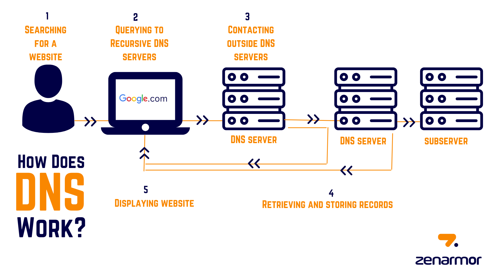

Definisi
DNS adalah sistem yang menerjemahkan nama domain menjadi alamat IP yang bisa dipahami oleh komputer. Tanpa DNS, pengguna harus mengingat deretan angka IP untuk setiap situs web.
Cara Kerja
Saat pengguna mengetik nama domain, browser akan meminta informasi ke server DNS. Server DNS kemudian mencocokkan nama domain tersebut dengan alamat IP server yang menyimpan situs, lalu mengembalikan hasilnya ke browser.
